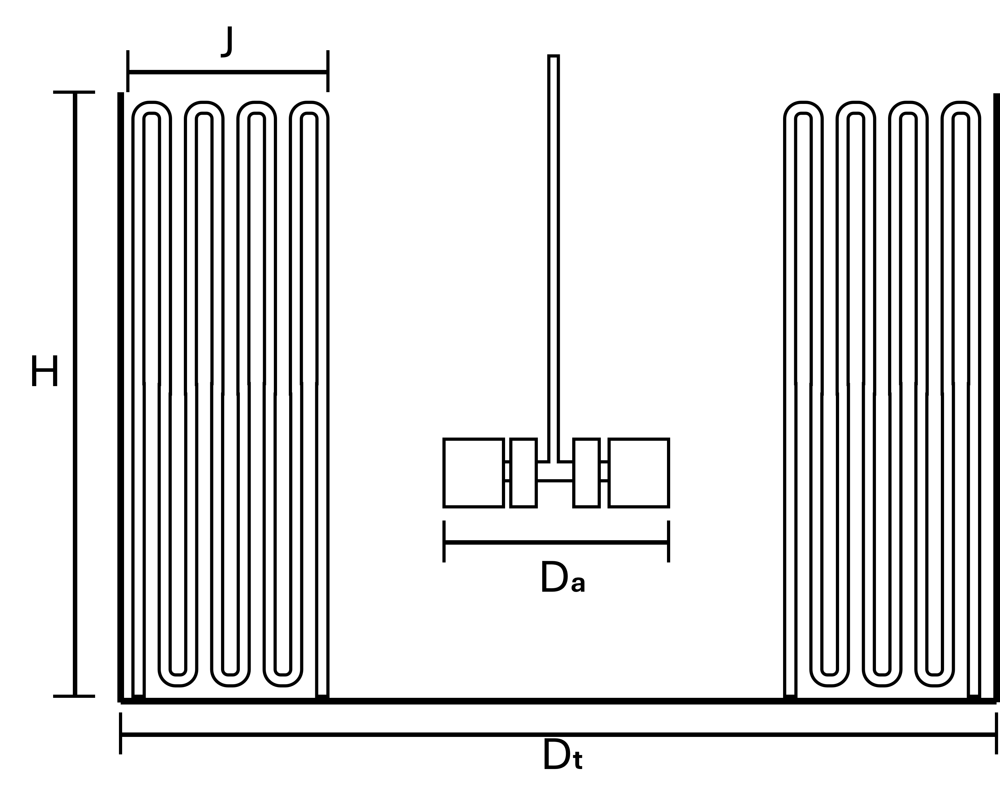
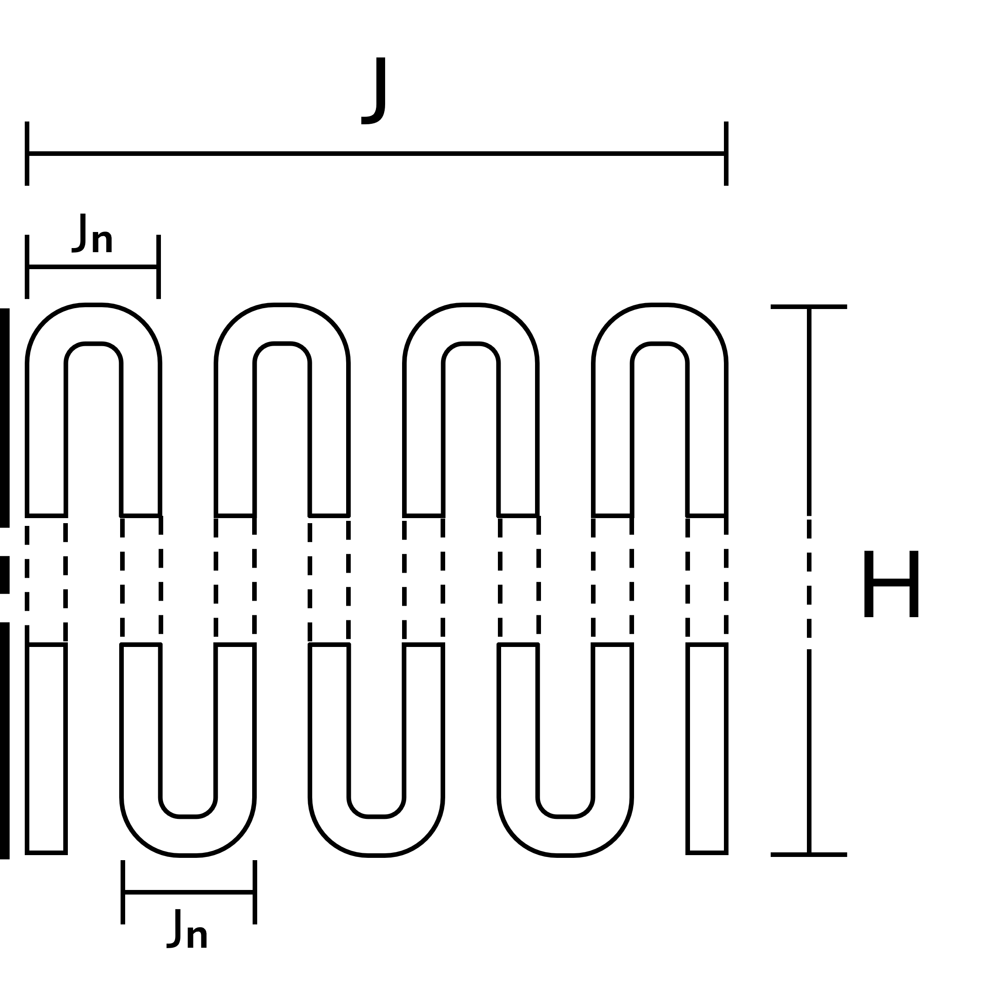

Ejercicio 2: Serpentines dispuestos como deflectores
Enunciado
Un proceso industrial genera una corriente residual a \(92~^\circ\mathrm{C}\) compuesta por tolueno (\(22.3\%\) en fracción molar) y agua. Con el fin de aprovechar esta corriente, se plantea someterla a un proceso de separación que opera de forma óptima a \(20~^\circ\mathrm{C}\), por lo que es necesario enfriarla previamente.
Muy a su pesar, su jefe insiste en utilizar un estanque agitado con serpentines dispuestos como deflectores para realizar el enfriamiento. Se propone entonces un estanque de \(30~\mathrm{m}^3\), con proporciones geométricas \(S_1=S_5=1/4\) y \(S_6=6/5\), similar al esquema mostrado en la figura 1.a), operando con una agitación de \(N=150~\mathrm{RPM}\).
Respecto al diseño de los deflectores, la figura 1.b) ilustra un arreglo de 8 pasadas de tubo por deflector, con una separación de \(J_n=15~\mathrm{cm}\). Los tubos están fabricados en acero (\(k = 50.2~\mathrm{W}\cdot\mathrm{m}^{-1}\cdot\mathrm{K}^{-1}\)) y presentan un espesor de pared de \(m = 2.413~\mathrm{mm}\). Por estos tubos circula etilenglicol como refrigerante, a un caudal volumétrico de \(\dot{V} = 12~\mathrm{m}^3\cdot\mathrm{h}^{-1}\) y una temperatura de entrada de \(5~^\circ\mathrm{C}\). Cabe destacar que el serpentín corresponde a un único tubo que forma todos los deflectores.

(a) Esquema general del estanque

(b) Diseño de los serpentines deflectores
Figura 1: Estanque agitado con serpentines dispuestos como deflectores
Las propiedades termofísicas promedio de los compuestos involucrados son las siguientes:
Compuesto
MW (g/mol)
Densidad (kg/m\(^3\))
c\(_P\) (J/kg\(\cdot\)K)
k (W/m\(\cdot\)K)
mu (Pa\(\cdot\)s)
Tolueno
92.14
802.9
1921.3
0.114
3.02\(\times10^{-4}\)
Agua
18.02
997.3
4199.1
0.607
9.01\(\times10^{-4}\)
Etilenglicol
62.07
1104.0
812.03
0.251
64.02\(\times10^{-4}\)
Para estimar cualquier propiedad termofísica \(\bar{M}\) de la mezcla, puede utilizar la siguiente expresión: \[
\bar{M} = w_1\cdot\bar{M}_1+w_2\cdot\bar{M}_2
\] donde \(w_i\) representa la fracción másica del componente \(i\).
Si se desea enfriar la corriente con agitación durante un período de 13 horas, ¿cuántos deflectores se requieren en el estanque? Considere que para el refrigerante en los serpentines (dispuestos como deflectores), puede utilizar la ecuación de Dittus-Boelter para estimar el número de Nusselt. Para el fluido agitado en el estanque, utilice la ecuación de Havas: \[
Nu = 0.208Re_D^{0.65}Pr^{0.33}\left(\frac{\mu}{\mu_w}\right)^{0.4}
\]
Itere los cálculos anteriores hasta encontrar el tiempo necesario para que el número de deflectores sea \(n_b = 3\). Compare ese tiempo con el obtenido usando la ecuación de Dunlap y Rushton (disponible en el formulario) para \(n_b = 3\): \[
Nu = 0.09Re_D^{0.65}Pr^{0.33}\left(\frac{D_a}{D_t}\right)^{0.33}\left(\frac{2}{n_b}\right)^{0.2}\left(\frac{\mu}{\mu_w}\right)^{0.4}
\] En caso de obtener resultados distintos, responda: ¿A qué se debe esta diferencia? ¿Cuál de los métodos considera más adecuado utilizar y por qué?
A partir de los resultados anteriores, se puede calcular \(U\) a partir de los números a dimensionales y las correlaciones para el número de Nusselt descritas en el enunciado.
Código
%%render long4## Lado del estanque (Fluido caliente)N =150/60#RPSRe_h = (rho_h*N*D_a**2)/mu_hPr_h = (mu_h*cp_h)/k_hNu_h =0.208* Re_h**0.65* Pr_h**0.33h_h = Nu_h*k_h/D_t #W$\cdot$m$^{-2}\cdot$K$^{-1}$## Lado del serpentín (Fluido frio)v_c =12/3600#m$^2\cdot$s$^{-1}$Re_c = (4*rho_c*v_c)/(pi*D_i*mu_c)Pr_c = (mu_c*cp_c)/k_cNu_c =0.023* Re_c**0.8* Pr_c**0.4h_c = Nu_c*k_c/D_i #W$\cdot$m$^{-2}\cdot$K$^{-1}$## Cálculo de Uk_p =50.2#W$\cdot$m$^{-1}\cdot$K$^{-1}$U = (D_e/(D_i*h_c) + D_e/(2*k_p)*log(D_e/D_i) +1/h_h)**(-1) #W$\cdot$m$^{-2}\cdot$K$^{-1}$
Cálculo del área de transferencia y temperatura de salida del fluido refrigerante
Se puede armar un sistema de ecuaciones a partir de la ecuación de diseño y el tiempo de mezclado. \[
F\cdot c_{P,\mathrm{ME}}\cdot(T_{\mathrm{ME},~o}-T_{\mathrm{ME},~i}) = A\cdot U\cdot\Delta T_{ml}
\]
Por lo tanto se necesitan 6 deflectores para que el proceso de calentamiento agitado se demore 13 horas.
Inciso 2
Iterando los cálculos del inciso anterior utilizando el mismo solver, se llega a que \(t_M\approx16\) horas. Ahora utilizando la correlación para el enunciado recalculamos \(U\).
Calcular U utilizando Dunlap y Rushton
Código
%%render longn_b =3L = (8*H)*n_b #mA = pi*D_e*L #m$^2$## Nuevo coeficiente local de transferencia de calorNu_h =0.09* Re_h**0.65* Pr_h**0.33* (D_a/D_t)**0.33* (2/n_b)**0.2h_h = Nu_h*k_h/D_t #W$\cdot$m$^{-2}\cdot$K$^{-1}$U = (D_e/(D_i*h_c) + D_e/(2*k_p)*log(D_e/D_i) +1/h_h)**(-1) #W$\cdot$m$^{-2}\cdot$K$^{-1}$